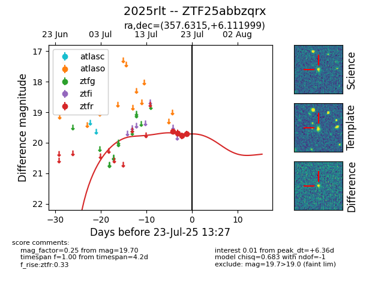

Target ZTF25abbzqrx at 2025-07-23 13:27, see:
FINK: fink-portal.org/ZTF25abbzqrx
Lasair: lasair-ztf.lsst.ac.uk/objects/ZTF25abbzqrx
ALeRCE: alerce.online/object/ZTF25abbzqrx
TNS: wis-tns.org/object/2025rlt
YSE: ziggy.ucolick.org/yse/transient_detail/2025rlt
alt names
ZTF25abbzqrx (ztf,fink)
2025rlt (tns,yse)
coordinates:
equatorial (ra, dec) = (357.6315,+6.11200)
galactic (l, b) = (96.7946,-53.64001)
photometry
last ztfr=19.70
4 ztfr detections
